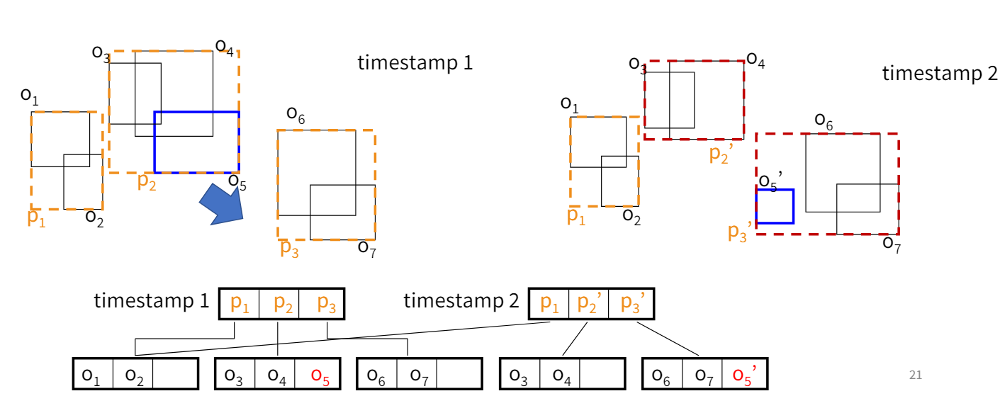

Spatiotemporal Data
The Temporal Dimension
Location and time are crucial yet challenging dimensions for traditional Relational Database Management Systems (RDBMS) to handle efficiently. Unlike other data dimensions, the temporal aspect cannot be seen just as another dimension due to its unique nature. Operations and queries involving time require specialized handling and storage solutions, particularly in the context of spatiotemporal data.
Spatiotemporal Database
A spatiotemporal database manages data that changes over time and space, providing a means to store, query, and manage data whose geometrical properties evolve.
Examples:
- tracking climate changes
- managing transportation logistics
- animating characters in movies
Trajectory Data
Data that record the locations of a moving object over time in a geographical space
Trajectory data captures the movement of an object through space over time. This data typically consists of a series of locations and timestamps. It's used extensively in navigation systems, where each data point represents a location at a specific time, forming a trajectory that describes an object’s route.
- moving objects
- data concerns current and near future locations
- spatial trajectory
- data concerns the movement history of moving objecst
a trajectory without time dimension == route
Dimensions of Trajectory Data
basic
- spatial dimension: (locations)
- temporal dimension: (timestamps)
- attribute dimension (area of interest)
other
- entity
- environments (road network, floor plans)
- semantic (what activies at a location or time)
Applications of Trajectory Data
Trajectory data supports various applications from urban planning to fleet management and helps in analyzing movement patterns.
- optimizing logistics
- enhancing traffic management
- personalizing travel recommendations
Spatiotemporal Queries
- Query can take a point/range as input
- (Aggregate query): “find how many objects passed through area Q during time interval T”
- Query can take a point/range as input
- find nearest POI for given trajectory
- find top-k similar trajectories to a given trajectory
Complex queries
Monitoring queries
- where is nearest petrol station
- Static nearest neighbor query (concerning a given location)
- Moving Nearest Neighbour (NN) query (Concerning the current location which is moving)
Indexing for Spatiotemporal Data
| name | pros | limitations |
|---|---|---|
| R-tree |
|
|
| 3D R-tree |
good for coordinate queries |
|
| Snapshot-based index | efficient in range query |
inefficient in space consumption |
| Hisorical R-Tree (implementation of above) |
an R-tree is maintained for each timestamp in history -> trees at consecutive timestamps may share branches to save space
|
Not quite efficient:
|
|  | ||
| Continously Moving Objects | For objects constantly moving - constant velocity (speed and direction). position calculated with basic motion function l(t) = l(t_0) + V(t - t_0). Update only required when velocity changes some how. |
Restricted to mostly linear motion (i just made this up may not actually be true) |
| TPR-tree (time parameterized) | coordinates are functions of time. Use MBRs to enclose object of interest with time as param.
|
|
Similarity Measures for Trajectory Data
Spatial trajectory is object movement history in a space
Many location-update strats:
- by time, by dist, by dev
- trade off between accuracy and other overheads
Applications
- marine animal traj
- ajdust timings on a road network
- sus behaviour detection
Similarity Measures
The foundation to perform trajectory-based queries and analytics
- Sequence-based: passing the same sequence of points
- Geometry based: similar shapes?
- With or without time or speed considerations
Key factors to consider:
- alignment of sampling points (non-uniform sampling)
- robustness to noise (to deal with data qual issues)
- Lock-step Euclidean Distance (LSED)
-
The ùëòùë°‚Ñé point of a trajectory is aligned to the ùëòùë°‚Ñé point of the other trajectory
- total distance between all pairs of corresponding points in two trajectories
- requires that two traj contain the same number of points
- cannot find similar trajectories with different sampling rates
- sensitve to noise (acoustic???)
- Adaptive Alignment
- Dynamic time warping (DTW) distance: Find the best match for every single point, even if they are sampled by
different frequency
Optimal order-aware alignment between two sequences: Goal: minimize the aggregate distance between matched points
1-to-many mapping: one point in one sequence can be mapped to multiple points in another sequence
- Dynamic Time Warping: DTW
-
Classic dynamic programming algo which is useful when detecting similar trajectories with different sampling rates
Minimize the aggregate distance between matched points
minimum cost path??: Path: from lower left to the upper right corner of the distance matrix that minimizes the sum of squared distances
Count based similarity
Similarity is measured by the number of ‘similar’/ ‘dissimilar’ samples
- LCSS: Longest Common Sub-Sequence
-
Adaptation of string similarity: Two locations are regarded as equal if they are ‘close’ enough (compared to a threshold)
Pros: insensitve to noise
Cons: not easy to define threshold, may return dissimilar trajectories
Path of maximum score:
- Edit Distance (EDR)
- Edit distance of real sequence. Adaption from edit distance on strings:
- number of insert,delete replace needed to convert one string into another
- two locations are not regarded as equal if they're not close enough
- every edit comes at a cost
Value means the number of operations, not “distance between locations”
EDR costs are thresholded to 0 if the current pair of points match, otherwise 1.
Non-thresholded version: edit distance with real penalty (ERP)
| LCSS | Overlap | EDR |
|---|---|---|
| lcss counts number of matched pairs |
count based, complementary to each other |
edr counts the cost of operations needed to fix the unmatched pairs |
Continuityyyyyyyyyyyyyyyyyyyyyyyyy
So far, only seen discrete measures only - based on points in trajectory
Continuous measures – based on edges in trajectory (polyline)
- One way distance
- Locality In-between Polylines
- One Way Distance
- OWD from T1 to T2 is:
basically the area between two curves
- Integral of the distance from points of T1 to T2
- Divided by the length of T1
- Locality In-Between Polylines Distance (LIP)
-
Locality In-between Polylines: Two moving objects are considered spatially similar when they move close
There are "bad cases" that LIP cannot handle. Don't ask me what they are cause it wasn't given in the lecture so I guress i dont need to know.
Spatiotemporal Distances
Take timestamp into consideration
- Synchronous Euclidean Distance
- Euclidean distance between locations at the same time of two trajectories
- Non-Euclidean Distance
- Road network distance (basically not "as the crow flies")
Open Issues in Research
Trajectory Compression
significant level of redundancy (espc when moving at constant speed)
data qual can be poor
Simplification vs Compression
- Trajectory Simplification
- Removing redundant information in a trajectory. No data loss
- Trajectory Compression
- Reduce amount of data without too much information loss. Fine with data loss
Factors to consider
- GOALS: size, quality, fitness for use, processing efficiency
- Intra- inter- or knowlege-assisted
Compression with Road Network Constraints
- Consider map-matching and trajectory compression at same time
- Consider shortest path for compression
Applications of SED in POSTGRESQL
Week 8: Navigating the Maze of High-Dimensional Data
Think of high-dimensional data like a huge, complex LEGO structure where each block is a data point. We need some special tools to manage this structure efficiently without it toppling over!
Understanding the Basics
Imagine you're in a forest (the data forest) filled with trees (data points). As the forest grows, finding your favorite tree becomes really tough. This is what we call the "Curse of Dimensionality".
Techniques to Tackle High-Dimensional Data
Let's say you have a magic map (indexing techniques like X-Tree and Pyramid) that shows you where each tree is, making it easier to find what you need without walking through the entire forest.
Why Use Advanced Techniques?
Without our magic map, finding our favorite tree could take all day (inefficient querying). With it, we can find the tree quickly and have more time to play!
X-Tree: A Superhero in the Data Forest
Think of the X-Tree as a superhero who can jump very high, reaching up to grab any tree's leaf you need without bothering the other trees. This superhero helps us avoid a messy forest where all trees are tangled (overlapping).
Pyramid: Slicing Up the Data Cake
Now, imagine your data is a huge cake. The Pyramid technique slices the cake into neat, manageable pieces so that you can easily pick the piece you want without disturbing the rest.
VA-File: The Treasure Map
Our VA-File is like a treasure map. It marks where treasures (data points) are buried but in a simplified way, so we dig fewer holes (reduce search space) to find our treasure.
Summary
By using these magical tools, navigating the complex world of high-dimensional data becomes like a fun day out in the LEGO forest or slicing a delicious cake at a party. We make things easier and more efficient, turning what could be a headache into a fun adventure!
Exploring the Complexity of High-Dimensional Data
In high-dimensional spaces, managing data becomes a formidable challenge due to phenomena like the 'Curse of Dimensionality'. This term describes how performance issues escalate as the number of dimensions increases, impacting data density and distances between points.
Techniques for Efficient Data Management
X-Tree
The X-Tree structure is a variant of R-trees optimized for high-dimensional data by minimizing overlap between nodes. This is achieved through 'supernodes' that can dynamically adjust their size to prevent splits. It's particularly useful in environments where dimensionality causes significant overlap in traditional R-tree variants.
Pyramid Technique
This method divides a d-dimensional space into 2d pyramids with the apex at the center of the data space. Each pyramid is further divided into sections that resemble onion layers, simplifying the indexing and searching processes in multidimensional databases. This technique efficiently reduces the overlapping of index regions and enhances query performance.
VA-File (Vector Approximation File)
The VA-File simplifies the search process in high-dimensional vector spaces by creating a simplified approximation of the data vectors. Each vector is quantized into a binary representation, which reduces the I/O cost by filtering irrelevant data early in the search process before a detailed examination of the closer candidates.
iDistance
iDistance transforms high-dimensional space into a single-dimensional index using a reference point for each cluster of points. This method scales well with dimensionality and provides an efficient way to conduct nearest neighbor searches by focusing on the proximity of points to these reference points.
Challenges and Insights
Managing high-dimensional data often requires a balance between computational efficiency and the accuracy of the results. Each technique mentioned addresses different aspects of these challenges, from reducing overlap and enhancing indexing efficiency to simplifying the search process in large datasets.
Conclusion
Understanding these advanced techniques is crucial for effectively managing and querying high-dimensional data, especially as the size and complexity of datasets continue to grow in modern applications.
Multimedia Databases
Managing High-Dimensional Data
The lecture begins by addressing the challenges of managing high-dimensional data in multimedia databases, outlining the necessity for robust systems capable of efficient and reliable multimedia data management and retrieval.
Multimedia Databases (MMDB)
Multimedia databases allow for the storage and retrieval of multimedia objects, supporting data types like text, audio, graphics, image, animation, and video. This section discusses the generic architecture of a Multimedia Database Management System (MMDBMS), which includes components such as:
- Feature extraction
- Compression
- Indexing
- Query feature construction
- Search engine feedback and results handling
Type
Feature Representations and Abstraction
The lecture details how multimedia data can be abstracted into features for easier handling and storage. This includes:
- Color features, histograms, and models (RGB, CMYK, HSV)
- Texture and shape features
- Image gradients and edge detection techniques
- Advanced feature extraction methods like Histogram of Oriented Gradients (HOG), Scale Invariant Feature Transform (SIFT), and neural network-based representations
Approximate Nearest Neighbor Search
Methods for performing efficient searches in multimedia databases are discussed, particularly focusing on approximate nearest neighbor (ANN) search, which is crucial for handling large-scale data.
Hashing and Locality-Sensitive Hashing (LSH)
The lecture explores hashing techniques used to quantize feature vectors into binary codes, which improve the efficiency of search operations. The concept of locality-sensitive hashing (LSH) for different distance measures like Euclidean and cosine distances is also introduced.
Media Data Abstraction and Retrieval
Discusses how media data is abstracted to low-level representations called features. Techniques for media retrieval, such as content-based image retrieval, are covered along with their associated challenges, such as precision, recall, and the F-score for evaluating retrieval effectiveness.
Practical Demonstrations
The lecture includes practical demonstrations on implementing a simple image search engine, demonstrating the real-world application of discussed concepts and techniques.
Summary
The session concludes by summarizing key points about multimedia databases, feature abstractions, the architecture of MMDBMS, and retrieval evaluation metrics.